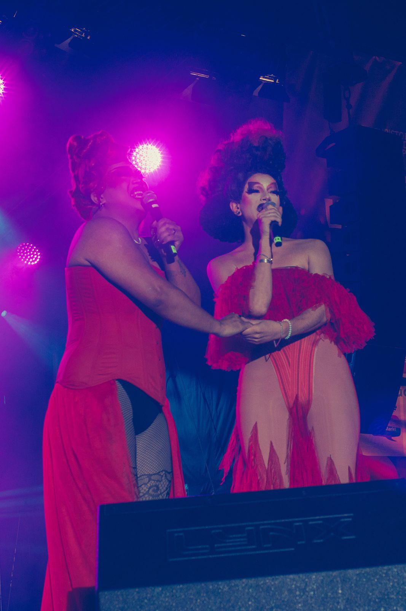
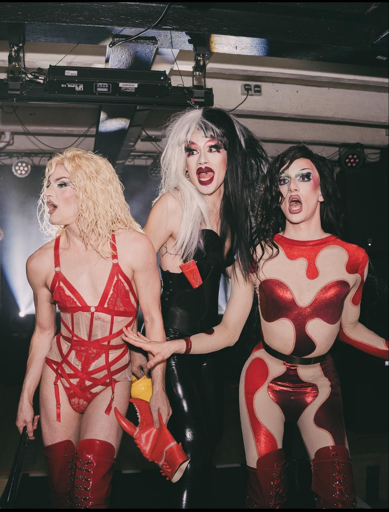

Drag Shows in Berlin
DUCT TAPE produziert die größte Drag Show Berlins und bringt regelmäßig Drag Queens aus der ganzen Berliner Szene und internationale Gäste gemeinsam auf die Bühne, mit eigener Dramaturgie, Live-Gesang, Comedy und Tanz.
Die nächsten Drag Shows
-
04.12.FreitagFr19–21:30 UhrEinlass 18 Uhr
-
05.12.SamstagSa19–21:30 UhrEinlass 18 Uhr
Die Shows: große Bühne für Berliner Drag
Jede Produktion von DUCT TAPE versteht sich als eigene Welt mit Dramaturgie, Bildsprache und klarem Qualitätsanspruch. Die Shows schließen die Lücke zwischen Barshow, Clubperformance und großer Theaterproduktion und geben regelmäßig auch neuen Künstler*innen eine große Bühne.
Feste Termine im Jahr sind die Birthday Show Ende September, mit der das Kollektiv seinen Geburtstag feiert, und die Weihnachtsshows im Dezember.


Häufige Fragen zu den Drag Shows
Wo gibt es Tickets?
Tickets gibt es über rausgegangen. Der Link steht oben bei jedem Termin.
Wo finden die Shows statt?
An wechselnden Orten in Berlin, zum Beispiel im Theater im Delphi in Weißensee. Der Ort steht bei jedem Termin.
Wer tritt auf?
EMI, Symba und Magda von Pfeffer von DUCT TAPE und wechselnde Gäste aus der Berliner Drag-Szene und international. Das Line-up steht auf der jeweiligen Eventseite.
Lässt sich eine Drag Show auch für eine eigene Veranstaltung buchen?
Ja. DUCT TAPE produziert Shows auch für Firmenfeiern, Festivals, Clubs und private Events. Anfragen laufen über das Booking-Formular.
Eine Drag Show für dein Event?
DUCT TAPE produziert Shows auch für Firmenfeiern, Festivals, Clubs und private Events.
Booking anfragen